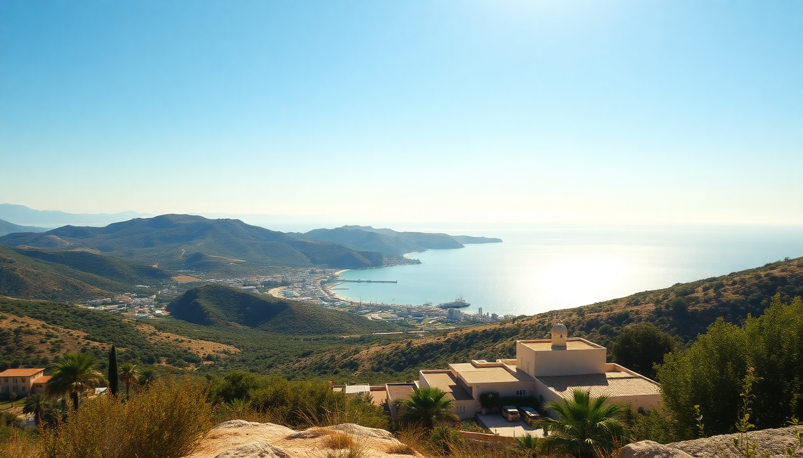

Best Beaches in Greece: Crete, Rhodes & Corfu Guide

I spent three weeks island-hopping across Crete, Rhodes, and Corfu last summer, chasing the best swimming spots without falling for the overhyped tourist traps. Here’s what I found — real beaches with good water, honest food nearby, and places to sleep that won’t break your budget.
Which beaches on Crete are worth the drive?
Crete is massive, and the best beaches require some effort to reach. The south coast delivered every time.
Elafonisi Beach gets all the hype for its pink sand, but it’s a zoo by 10 AM. Go early or skip it. Instead, head to Falasarna on the west coast — the water is that same Caribbean-clear blue, but the beach is wider and the crowds thinner. We parked at the far end near the rocky outcrop and had a private cove for hours.
For something wilder, drive to Preveli Beach. It’s a 20-minute walk down a gorge, but you’re rewarded with a palm-lined lagoon where a river meets the sea. The water is cold — a shock after the warm Med — but the setting is worth it. Bring water shoes; the pebbles hurt.
- Falasarna: Best for clear water and sunset. Taverna Kri-Kri up the hill serves grilled octopus that’s actually grilled, not boiled.
- Preveli Beach: Unique lagoon setting. Hike down early; the heat by noon is brutal.
- Balos Lagoon: Instagram-famous, but the dirt road approach is a nightmare. We hired a boat from Kissamos instead — smoother and more fun.
- Vai Beach: The only natural palm forest in Europe. Crowded, but the palm backdrop is legit. Rent a lounger from the stand near the main entrance.
What’s the best beach on Rhodes for avoiding crowds?
Rhodes surprised me. The east coast is all package-hotel strips, but the west and south have hidden stretches that felt almost empty.
Anthony Quinn Bay is beautiful but tiny — get there before 8 AM or you’re sharing your towel with strangers. We stayed at Lindos Beach Hotel and walked down to St. Paul’s Bay instead. It’s a small cove with a white pebble beach, clear water, and a chapel on the rock. Much quieter, and the hotel’s beach bar does a decent Greek salad and cold Mythos.
For a proper swim, drive to Prasonisi Beach at the southern tip. It’s a sandbar that splits the Aegean and Mediterranean. One side is calm, the other has waves for windsurfing. We parked near the taverna Prasonisi Sunset and walked to the middle. The water was waist-deep for 100 meters out — perfect for floating.
- St. Paul’s Bay (Lindos): Sheltered, clear, and less crowded than Anthony Quinn. Lunch at Mavrikos in Lindos village if you want a splurge.
- Prasonisi Beach: Dual-sea experience. Go in September when the winds drop and the water is warmest.
- Tsambika Beach: Long sandy stretch with a monastery on the hill. The climb is 300 steps, but the view from the top is a solid payoff.
- Ladiko Beach: Small cove next to Anthony Quinn. Less famous, same water quality. No facilities — bring your own water.
Where should I swim on Corfu without the package-hotel crowds?
Corfu’s west coast is where the real beaches are, but the east has a few quiet gems too.
Paleokastritsa is the postcard view, but the main beach is a mess of sunbeds and jet skis. Instead, walk 10 minutes south to Rovinia Beach — a pebble cove accessible only by foot or boat. We swam there for two hours and saw maybe five other people. The water is deep right off the shore, so it’s great for snorkeling. Bring a packed lunch; there’s no taverna.
Myrtiotissa Beach is famous for its nudist section, but the entire beach is stunning. It’s a steep walk down a winding path, but the water clarity is the best I saw on Corfu. We ate at Taverna Akrotiri on the cliff above — the grilled sardines and house wine were simple and perfect.
- Rovinia Beach (Paleokastritsa): Secluded, pebbly, excellent snorkeling. Park at the Paleokastritsa Monastery lot and follow the coastal path.
- Myrtiotissa Beach: Crystal-clear water, clothing-optional section at the far right. Cliffside taverna Akrotiri is a must.
- Sidari Beach (Canal d’Amour): Overrated. The rock formations are cool for a photo, but the water is murky and the crowds are thick. Skip it.
- Issos Beach: Sand dunes and a cedar forest. The water is shallow for ages — good for families. Korakiana taverna nearby does a solid moussaka.
When is the best time to visit these Greek islands for good beach weather?
I went in late May and early June, and it was near-perfect. The water was warm enough (around 22°C), the beaches weren’t packed, and prices were still low-season.
July and August are brutal. The sun is intense, the beaches are sardine-cans, and accommodation doubles. We avoided that entirely. September is the sweet spot — water is at its warmest, crowds thin out after the 15th, and tavernas are still open.
- Late May–June: Best balance of warm weather, empty beaches, and reasonable prices.
- September: Warmest sea temperatures, fewer families, harvest season for local produce.
- July–August: Avoid if you can. If you must go, stick to the less famous beaches (Rovinia, Prasonisi) and go early.
- October: Risky. Weather can turn, and many tavernas and water taxis stop running mid-month.
What should I pack for a Greek beach trip beyond the obvious?
I learned the hard way. Greek beaches are often pebbly or rocky, not sandy. Water shoes saved my feet.
Reef-safe sunscreen is essential — many local shops sell it, but it’s cheaper to bring your own. The sun is strong even in May. I got burned on my first day at Falasarna because I thought the breeze meant I wasn’t cooking.
A dry bag is useful for boat trips to Balos or the Blue Lagoon. And bring a lightweight sarong or wrap — many tavernas and churches require covering shoulders and knees, and it doubles as a towel.
- Water shoes: Non-negotiable for Preveli, Rovinia, and any pebble beach.
- Reef-safe sunscreen: Protects the marine life and your skin. Brands like Sun Bum or Green People work well.
- Dry bag: 10-liter size is enough for a day trip. Earth Pak makes a solid one.
- Lightweight sarong: Covers shoulders for church visits and doubles as a beach blanket.
FAQ
Are the beaches in Crete, Rhodes, and Corfu safe for swimming? Yes, generally. Most beaches have lifeguards in peak season, but remote ones like Rovinia and Prasonisi do not. Always check for flag warnings — red means no swimming. Jellyfish are rare but appear in late summer; locals usually post warnings on beach notice boards.
Can I reach these beaches without a car? Some, but not all. In Crete, Falasarna and Preveli require a car or a tour bus. In Rhodes, St. Paul’s Bay is walkable from Lindos town, but Prasonisi is 30 km south. In Corfu, Paleokastritsa and Sidari have bus routes, but Rovinia and Myrtiotissa are easier with a rental. We used Rentalcars.com (booked through our hotel) and paid about €30/day for a small car.
Which island has the best food near the beaches? Crete, hands down. The tavernas near Falasarna and Preveli serve proper Cretan cuisine — dakos (barley rusk salad), stamnagathi (wild greens), and fresh grilled fish. Rhodes and Corfu have good options too, but the quality is more hit-or-miss. In Corfu, stick to the tavernas on the west coast hillsides, not the beachfront strips.
Conclusion
- Crete wins for variety and food. Hit Falasarna for clear water, Preveli for the lagoon, and skip Balos unless you boat in.
- Rhodes is best for quiet coves. St. Paul’s Bay and Prasonisi are worth the detour; Anthony Quinn Bay is overhyped.
- Corfu has the most secluded beaches. Rovinia and Myrtiotissa are gems; Sidari is a pass.
- Go in late May, June, or September for the best experience. July and August are too hot and crowded.
- Pack water shoes and reef-safe sunscreen — Greek beaches are tougher than they look.